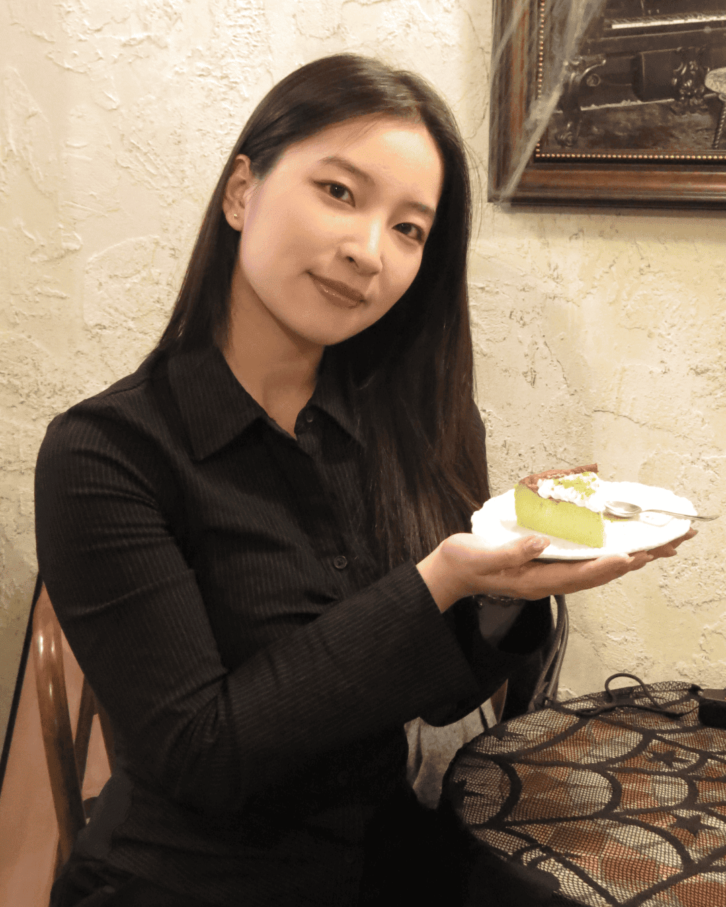
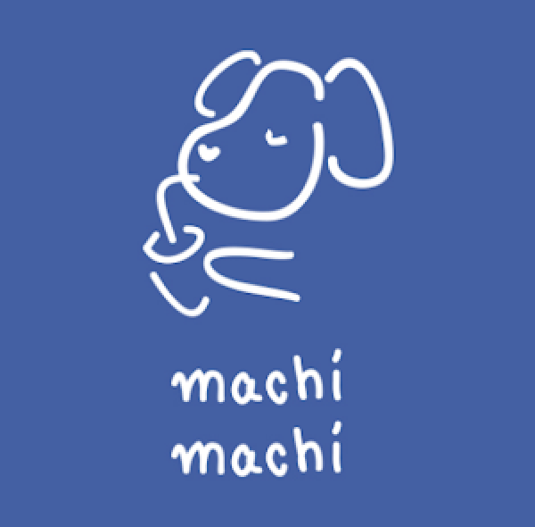
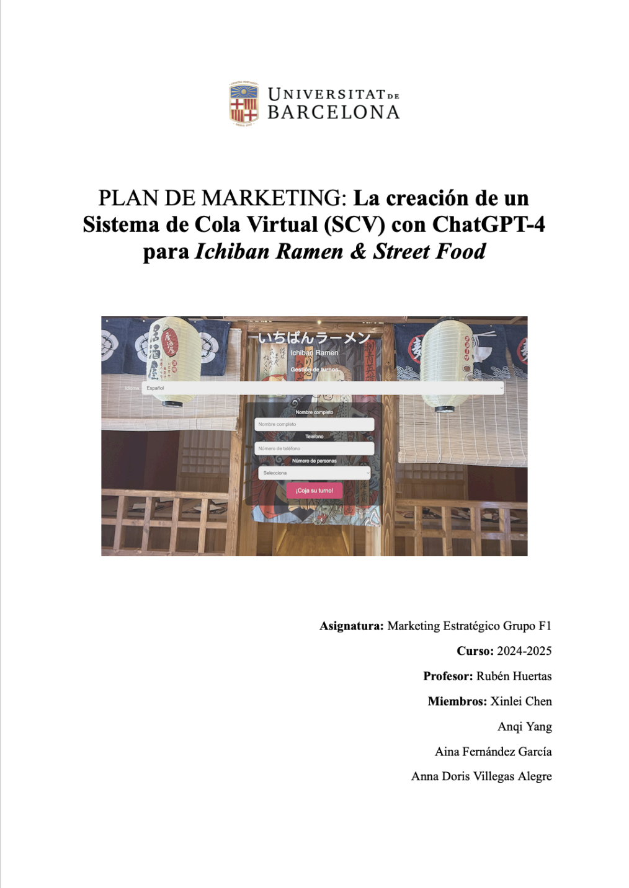
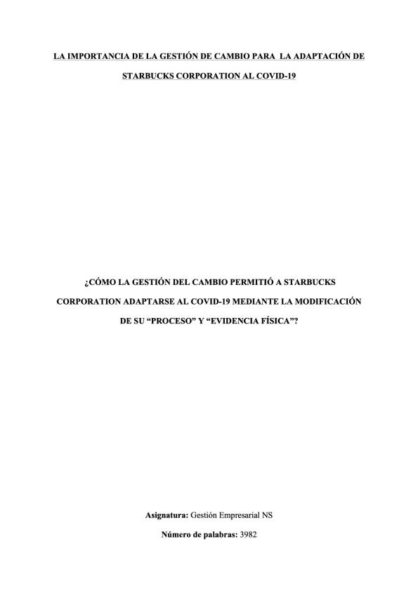

UNIVERSIDAD DE BARCELONA
Septiembre 2022 - presente | Barcelona, España
Doble grado de Administración de Empresas y Derecho.
· Matrícula de Honor en Sociología.
· Sobresaliente en Derecho de la Empresa y del Mercado, Recursos Humanos y Estadística II.

COLEGIO INTERNACIONAL EIRÍS
Septiembre 2020 - Junio 2022 | La Coruña, España
Bachillerato Internacional: Gestión empresarial (NS)
· Media ponderada de bachillerato: 9,5/10.
· Calificación final del BI: 40/45.

AUTÓNOMO DE BAZAR ORIENTAL
Agosto 2025 - Septiembre 2025 | Arteixo, España
Asesora de tienda (jornada completa).
Fui responsable de la atención al cliente, gestión de caja y reposición de mercancía.
MACHI MACHI
Septiembre 2024 - Noviembre 2024 | Barcelona, España
Dependienta y barista (jornada parcial).
Desempeñé las funciones de toma de comandas, atención al cliente, gestión del cobro y encargada de preparar las bebidas.
TRADUCTORA CHINO-ESPAÑOL
2023 – 2024 | Barcelona, España
Traductora y asistente en trámites diarios para emigrantes chinos (en mi tiempo libre).
Ofrecí servicios de traducción en citas médicas, trámites bancarios, reuniones escolares, actos de compraventa de automóviles e inmuebles, etc.
PROFESORA DE ESPAÑOL
2023 – 2024 | Barcelona, España
Profesora de gramática y vocabulario básico de español (en mi tiempo libre).
Impartí clases de español a niños de primaria, recién llegados de China.
Cotti Coffee llega a España

Asignatura: Dirección Estratégica
Profesora:
Año: Diciembre 2025
Textos completos en PDF:
Justificación de la elección: Decidimos escoger esta empresa porque el tema salió en un episodio de un Podcast titulado “La guerra del café 2025” (咖啡战争 2025). En ese Podcast salieron datos muy interesantes sobre COTTI COFFEE: uno, ese descuento que ofrecían las plataformas de delivery supuso la salvación de COTTI COFFEE; y dos, el nuevo sistema de franquicia permitió a COTTI COFFEE restablecer cierta reputación, pues consiguieron “tener 10.000 puntos”, y ese fue el mensaje con el que quisieron impactar al público intentando así cesar el rumor de su quiebra, pero muchos de ellos eran realmente “secciones” en tiendas de conveniencia.
La creación de un Sistema de Cola Virtual (SCV) con ChatGPT-4 para Ichiban Ramen & Street Food

Asignatura: Marketing Estratégico (F1)
Profesor: Rubén Huertas
Año: Mayo 2025
Nosotros, en vez de realizar algún cartel publicitario u otro medio de comunicación visual para promociar la empresa, nos hemos comprometido a hacer más creativo, y así surgió el Sistema de Cola Virtual (SCV), inspirado en un sistema análogo que había visto usar en algunos restaurantes de China.
Realizarlo no fue realmente fácil, pues ninguno de nosotros teníamos conocimiento alguno de programación, y aunque se decidió usar el ChatGPT-4, se hicieron muchos intentos para que los prompts fueran cada vez más específicos y así, obtener unos códigos que pudiera construir el SCV tal y cómo lo queríamos.
En cuanto a la información empleada para la elaboración de este Plan de Marketing, hemos revisado primero sus publicaciones de Instagram y después, le hicimos al jefe una entrevista para conocer mejor el funcionamiento de su restaurante. Y todo ello, basándonos en un esquema inicial que habíamos elaborado previamente para saber qué datos íbamos a necesitar.
Y finalmente, otro punto distintivo de nuestro trabajo fue emplear Prezi para crear los slides utilizados durante nuestra presentación oral.
Starbucks

Asignatura: Gestión Empresarial (NS)
Profesor: Daniel Couto
Año: 2020 - 2022
De acuerdo al Origen de las especies de Darwin, la especie que sobrevive es aquella que es capaz de adaptarse y ajustarse al entorno cambiante en el que se encuentra a sí mismo. Asimismo, en el mundo empresarial, las empresas también tienen que adaptarse a los cambios del entorno para poder sobrevivir y ser rentables y competitivas. Aunque las ventajas de adaptarse a las demandas del entorno están claras, su realización puede verse obstaculizada por las resistencias de los empleados. Sin embargo, una buena gestión de cambio, permite por un lado, reducir esta resistencia y por el otro, introducir más fácilmente las nuevas medidas en la empresa...
... Y ASÍ COMIENZA MI MONOGRAFÍA.
University Nacional Entrepreneurship Competition (UNEC-UB)
19 febrero 2026 | Barcelona, España
Miembro del equipo “Share Bites”.
· Propuse la idea de negocio de crear una aplicación móvil en la cual permita a los particulares transaccionar los restos de productos alimenticios, que cumplan una serie de medidas de higiene y seguridad alimentaria.
· Hice la labor fundamental de revisar toda la normativa relacionada con la comercialización de productos alimenticios para analizar la viabilidad de nuestra idea de negocio.
· He colaborado con el resto del equipo en la investigación del mercado y presentación final del modelo de negocio.
Innovation Day (iDay)
12 noviembre 2025 | Barcelona, España
Miembro del equipo “Samurai”.
· Hemos propuesto un sistema de scoring con cancelación automática de citas, con el fin de penalizar aquel que no hace un uso responsable de los servicios de salud públicos.
· En respuesta al reto propuesto por el Institut Català de la Salut (ICS), he aportado tanto la perspectiva del usuario como la de la Administración pública, para terminar de perfilar la solución a proponer.
· He aportado mis conocimientos jurídicos a los que se tuvieron en cuenta a la hora de establecer la penalización del comportamiento irresponsable.
The MUA Challenge (Máster Universitario en Abogacía y Procura)
1 marzo 2025 | Barcelona, España
Miembro del equipo “Clyneon Advocates”.
· Desempeñé el rol de abogada defensora (en la fase del interrogatorio de partes y peritos) en un litigio civil-mercantil sobre si las imágenes creadas con ChatGPT pueden tener protección legal.
· He contribuido en la búsqueda de jurisprudencia y formulación de argumentos jurídicos de defensa.

.svg.webp)

TRABAJO EN EQUIPO
LIDERAZGO
También tuve la oportunidad escuchar las experiencias emprendedoras y muy inspiradoras de Claudia Herrero (cofundadora dde Mycrospace), Iris Vilà y Eduard Lisbona (fundadores de UGECE Agency), Carles García (directos y fundador de Scaleupventas) y Josep Coll (fundador de Red Points y cofundador de Repscan).
CAPACIDADES DE ANÁLISIS
Lugar: Escuela Cinderella (Arteixo).
Actividades realizadas:
BAILE MODERNO
Lugar: Actividad extraescolar del ayuntamiento (Arteixo).
Actividades realizadas:
JAZZ, URBAN y K-POP
Lugar: J6 DANCE STUDIO(BARCELONA).
Actividades realizadas:
Lugar: HUIFENG CALLIGRAPHY STUDIO (BARCELONA).
Página web: Actividades realizadas:
Dispositivos:
· Cámaras digitales (ccd y compactas): Canon g7x2, Canon ixus, Olympus y Casio.
· Cámaras instantáneas de Fujifilm.
· Cámara analógica réflex: Voigtländer Bessamatic.
Motivación: En verano de 2024 decidí buscar a fotógrafas-universitarias de cada ciudad de China a la que visitaba para que me tomaran unas fotos de recuerdo, ya que yo misma era pésima en eso.
Me impresionó la profesionalidad de una que había conocido en HangZhou (杭州). Trajo varios dispositivos para elegir, me enseñaba poses, me motivaba para que me sintiera lo más cómoda posible...
En fin, un servicio y unas fotos de calidad, incluso mejores que algunas agencias de la zona.
Me enamoré de su cámara Fujifilm X-S10 que, desgraciadamente, ya estaba descatalogada, pero en 2025 tuve la oportunidad de comprármela de segunda mano.
Y así empecé con la fotografía.